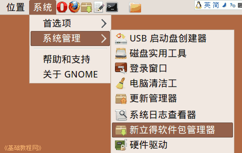
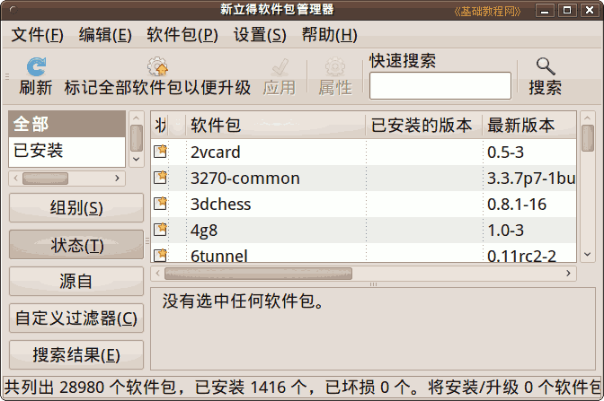
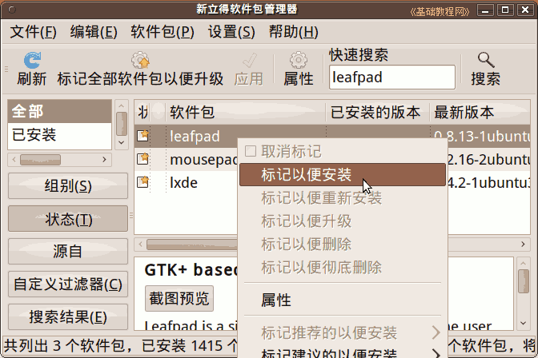
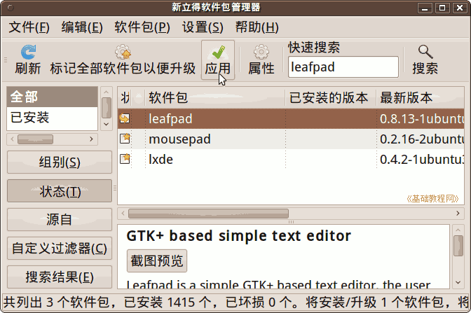
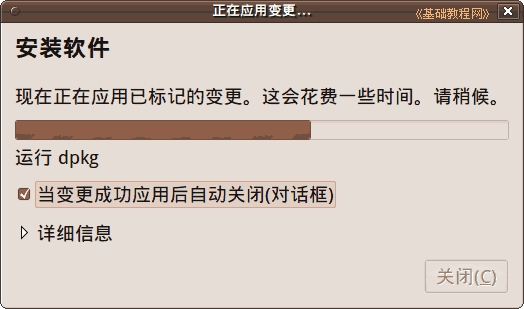
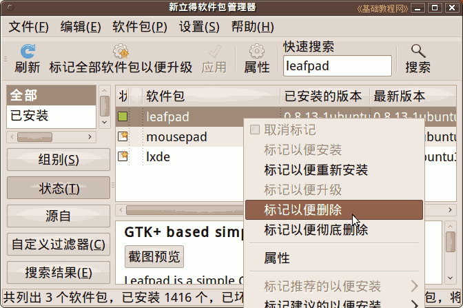

Ubuntu/GNOME 桌面程序指南
作者：TeliuTe 来源：基础教程网
四十二、新立得软件包管理器 返回目录 下一课在新立得中，可以搜索下载软件包，卸载软件包；
1、新立得软件包
1）点菜单“系统 - 系统管理 - 新立得软件包管理器”，打开新立得窗口，
如果没有安装，则到软件中心里搜索 synaptic，新版的12.04参考第10课 和第15课

2）输入密码后，在出来的窗口中，左侧是类别，右侧是软件包；

3）要安装一个软件包，在搜索框里输入包名称，在列表中点右键，选“标记以便于安装”；

4）然后点工具栏上的“应用”按钮开始安装；

5）点“应用”按钮后，开始下载并安装软件，完成后关闭即可；

6）在“文件”菜单中可以查看历史记录，编辑中可以撤消所选；
7）卸载软件包的方法是，搜索出来后，点右键选“标记以便删除”，彻底删除还会删除配置文件；

本节学习了新立得软件包管理器的基础知识，如果你成功地完成了练习，请继续学习下一课内容；
本教程由86团学校TeliuTe制作|著作权所有
基础教程网：http://teliute.org/
美丽的校园……
转载和引用本站内容，请保留版权信息和本站链接。